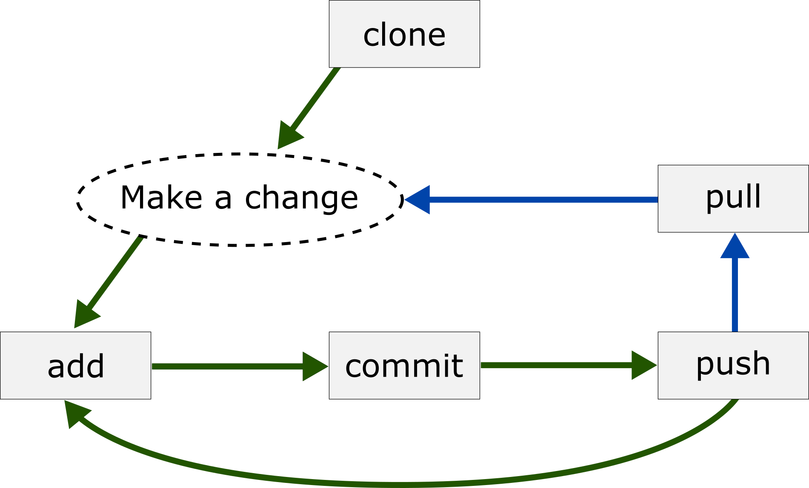

In this lesson, we will explore how to get started GitHub on your computer. This is meant to be almost entirely applied. Please see the additional resources page for more in-depth content on version control and GitHub.
In this lesson, we will explore how to get started GitHub on your computer. This is meant to be almost entirely applied. Please see the additional resources page for more in-depth content on version control and GitHub.
Why do I need version control?
Version control is a system that tracks and manages changes to your files. It is an indispensable tool for working with data. When you collaborate with others, it allows for a (somewhat) seamless workflow for sharing code and data. For solo projects, it allows you to:
- Have the same version of your project across all computers you work on.
- Have backups to your project files all in one place.
- View and transport yourself to various points in the history of your files. Important! Because of this, you do not have to have different versions of the same file on your computer!
These are just a few of the early benefits of using version control. There are a lot more that are worth exploring (e.g., forking) once you get a little experience under your belt!
1. Create a GitHub account
It all starts here! Go to this link and follow the usual steps for creating a new account (but don't download anything if they ask).
2. Download and Install GitHub
I prefer to use GitHub from bash (Bourne Again SHell). It is a free Unix shell that can be used across platforms. Those of you who use a command line terminal in Mac or Linux should find it familiar -- it is the default for Mac and Linux applications. Downloading the command line version of the git will allow you to use either git from bash (which I like) or from RStudio (which I'm amenable to).
Use the following links to download the command line version of GitHub:
- Download and Install for Mac:
- To install automatically, use this link.
- To install using homebrew, run the following in terminal:
- Install the Command Line Tools, if you don't yet have it:
xcode-select --installcurl -fsSL -o install.sh https://raw.githubusercontent.com/Homebrew/install/master/install.shbrew doctorbrew install git3. Configure your GitHub
With git installed, you now need to configure the program to talk to your account. You will do so (like most interactions with git) with bash. Open a bash window.
- Mac: Use launchpad to open the "terminal" application
- Windows: I usually type "bash" in my windows navigation bar search window, it should pop up as a suggested program
Working in bash, will use the "config" function in "git" to set it up. Start by providind a user name for your GitHub account:
git config --global user.name "Your Name"You'll next provide the email you used to set up your account:
git config --global user.email "your_email@email.com"Have a look to see if you've configured things correctly (you can change things if they're not correct):
git config --listYou are now ready to start using GitHub!
4. Working in command line
If you've not worked in bash before, it's worth taking a moment to look around. The bash program is basically a command line interface to your computer. When you interact with your computer outside of bash, you are using a program that is a graphical interface to your computer. A good way to get used to working in bash is simply navigating around your file system. Here's some ways to do that.
Print (display) working directory (i.e., where am I?):
pwdMove to a child directory:
cd some_child_directoryMove to the parent directory:
cd ..List files in working directory
lsList files in child directory:
ls some_child_directoryMake a new directory inside of the parent directory:
mkdir hello_worldCopy a file from the parent to child directory:
cp some_file_nameMove a file from the parent to child directory:
mv some_file_nameDelete a file from the parent directory:
rm some_file_name5. Clone the workshop repository
Now that you've connected your computer to GitHub, you can clone a repository to start using version control on the files in the folder. Cloning means that you are going to make a copy of the repository on your computer's hard drive.We'll use the repository for the workshop as an example:
- Start by navigating to this link, which is the repository where the example R code and data are stored for the workshop.
- Click the green Code button and copy the HTTPS address to your clipboard.
- Using the terminal commands above, navigate to the folder (
cd) where you want to clone your repository. Personally, I create a folder (mkdir) high in my organizational system to read and write to and I call that folder "gits". That way, I always know where I put a git repository. Whatever you do, put the file in a folder in which the name does not include blanks -- blanks can do unexpected things. - Type the following into bash (include a space after clone, but do not hit enter):
- Try to paste the repository url from your clipboard (after the space in clone). For Macs, the command will be cmd+ v for Windows it will be ctrl+shift+v. Did it work?
- Mac: Yes
- Windows: If it didn't work you have to set your "Options" to accept keyboard shortcuts.
- Right-click in your bash window
- Click "Options ..."
- Select "Keys" from the menu on the left
- Under shortcuts, put a checkmark at "Ctrl+Shift_letter shortcuts"
- Hit return (Mac) or Enter (Windows)
git clone 6. The GitHub workflow
You are now ready to start tracking your files! The diagram below shows the workflow for GitHub. Green arrows are tasks that you will complete every time you use Gihub. Blue arrows are tasks that you will do if you work on multiple computers of collaborate with others.

Here's what it all means:
- add: Stage a change. You've made some change to your file and you're ready to add that change to version control.
- commit: Saved changes to your file. You will add a message at this point that tells your readers (mostly you) what you did.
- push: Send your changes to GitHub.
- pull: Download the most recent files from GitHub. You would only use this if you are working on multiple computers or collaborating with others. Pull tries to change your files to match those already in Git. This can be challenging if a file that you're working on has diverged from the file in GitHub.
Here's how to do it:
git pull
git add some_file
git commit -m "some message"
git push origin master